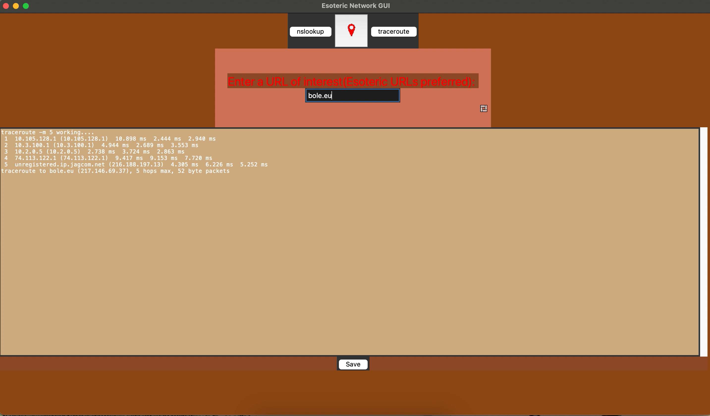

Projects
Esoteric network GUI
The first project I worked on in AP Computer Science after transferring to Shakopee this year, an internet diagnostic tool that has 3 functions, DNS lookuk, ping, and traceroute. It takes the input of a website, and returns the info from whatever button you pressed. For example, in the image above, I did traceroute to bole.eu, it showed 5 of the ip adresses of routers that packets from my laptop went through.